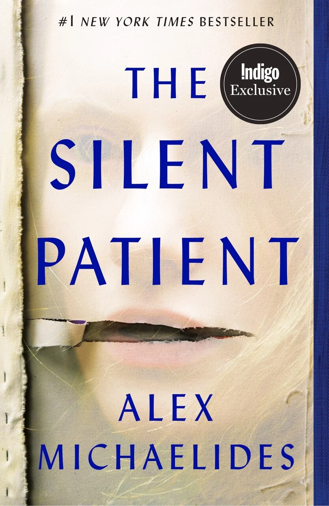

The silent patient
Auteur : Alex Michaelides
Genre: Thriller psychologique
Année de publication: 2019
Langue: Anglais et Français (titre VF : Dans son silence)

Sommaire
Alicia Berenson est une artiste peintre reconnue, marieé à Gabriel, un photographe de mode. Ils vivent dans une belle maison à Londre et semblent former un couple heureux... Jusqu’au soir ou Gabriel est retrouvé mort de plusieurs balles dans le visage, attaché à une chaise.
Alicia est retrouvée sur les lieux, blessée aux poignets. Tout indique qu’elle a tué son mari, mais à partir de cette soirée là, elle n’a plus jamais prononcé un seul mot.
Theo Faber travaille comme psychothérapeute à l’établissement ou est interné Alicia. Il a espoir qu’il pourra la faire reparler un jour. Il enquête son passé, son enfance, ses proches, son mariage.
Le lecteur suit à la fois les recherches de Faber et le journal intime d’Alicia.
Critique
J’ai été complètement absorbée dans cette histoire, particulièrement pour l’ambiance sombre et mystérieuse qui me rappelle un peu l’univers du Silence des agneaux.
Ce roman occupe une place particulière pour moi, car c’est un des premier roman que j’ai lu en anglais, et malgré tout, j’ai été totalement emportée par l’histoire.
Moment favori
L’ambiance froide, étouffante de l’hopital psychiatrique.
Moment moins fort
Je n’ai pas découvert la fin, mais j’ai entendu plusieurs personnes dire qu’elle était facile à découvrir.
Je vous laisse juger par vous-même!